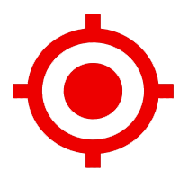

×
길찾기
마커 선택
이전 기록
더보기
×
키워드
:
검색하기
경유지
길찾기
출발지 :
도착지 :
기존 경로 시간, 거리 안내
추가 경로 시간, 거리 안내
×
CCTV
비상벨
경찰서
소방서
가로등
×
비상전화
비상문자
문자내용
안심귀가 서비스 비상문자입니다
좌표 값
X좌표 값
Y좌표 값
출발지
좌표
X 좌표
Y 좌표
도착지
좌표
X 좌표
Y 좌표
안심 길 찾기